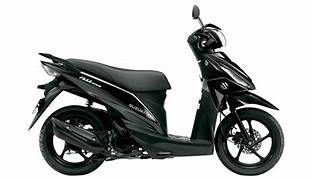

Suzuki Address 110 vale a pena?

Conheça a Suzuki Address 110
A Suzuki Address 110 é uma scooter compacta voltada para quem busca praticidade e economia no uso diário. Esse tipo de moto é ideal para deslocamentos urbanos, principalmente em cidades com trânsito intenso.
Por isso, muitas pessoas pesquisam se a Suzuki Address 110 vale a pena antes de comprar. O modelo promete ser uma solução eficiente para quem precisa de um transporte simples, econômico e fácil de pilotar.
Com câmbio automático, a Address 110 elimina a necessidade de trocas de marcha, o que torna a pilotagem mais confortável e prática, especialmente para iniciantes.
Motor e desempenho
A Address 110 conta com um motor de aproximadamente 110 cilindradas, focado em economia e uso urbano.
A velocidade máxima gira em torno de 85 a 95 km/h, sendo suficiente para deslocamentos em avenidas e ruas da cidade.
O desempenho não é voltado para alta velocidade, mas atende bem quem precisa de mobilidade no dia a dia.
Consumo de combustível
Um dos maiores destaques da Suzuki Address 110 é o consumo. Em média, ela pode fazer entre 40 km/l e 50 km/l.
Isso garante um custo de uso muito baixo, sendo ideal para quem quer economizar no combustível.
Preço da Suzuki Address 110
O preço da Suzuki Address 110 nova costuma ficar na faixa de R$ 11.000 a R$ 13.000, dependendo da região e da concessionária.
No mercado de usadas, é possível encontrar modelos entre R$ 6.000 e R$ 9.000.
Considerando o consumo e a praticidade, o custo-benefício costuma ser bastante interessante.
Conforto e praticidade
A Address 110 oferece boa ergonomia, com posição de pilotagem confortável e fácil de controlar. O banco é relativamente confortável para uso diário.
Além disso, conta com espaço sob o banco para guardar objetos, o que aumenta muito a praticidade no dia a dia.
Conclusão: Suzuki Address 110 vale a pena?
De forma geral, a resposta é que a Suzuki Address 110 vale a pena para quem procura uma scooter econômica, prática e fácil de pilotar.
Ela não é voltada para desempenho alto, mas entrega exatamente o que promete: mobilidade urbana eficiente e baixo custo.
Para quem quer economia e praticidade no dia a dia, é uma excelente escolha.
Outras notícias
Suzuki Burgman 125 vale a pena?